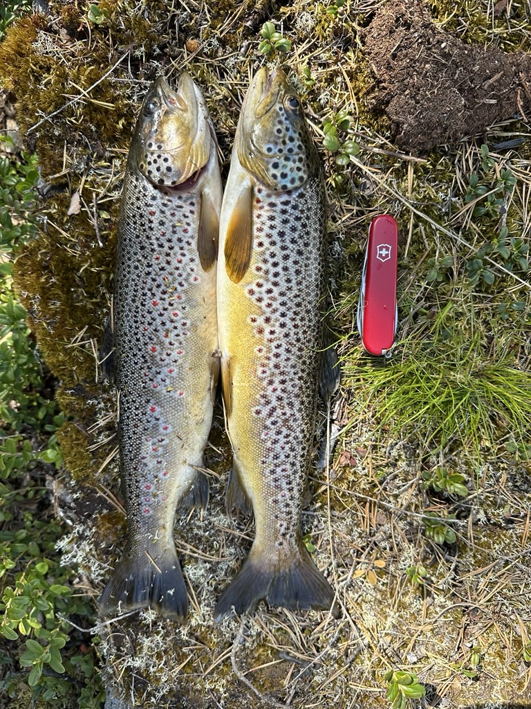
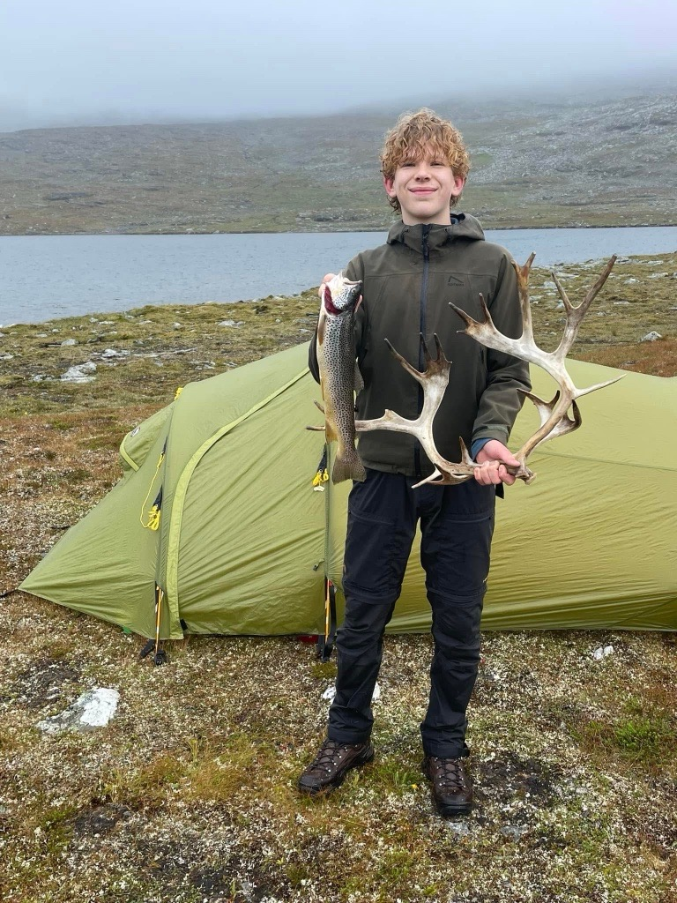
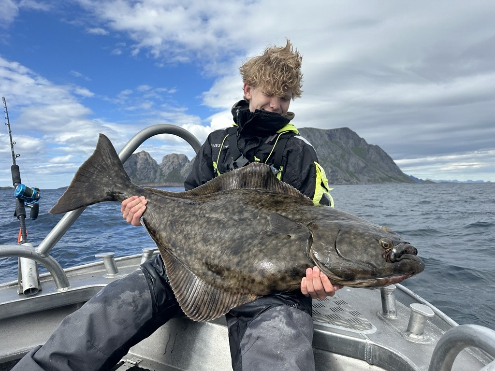
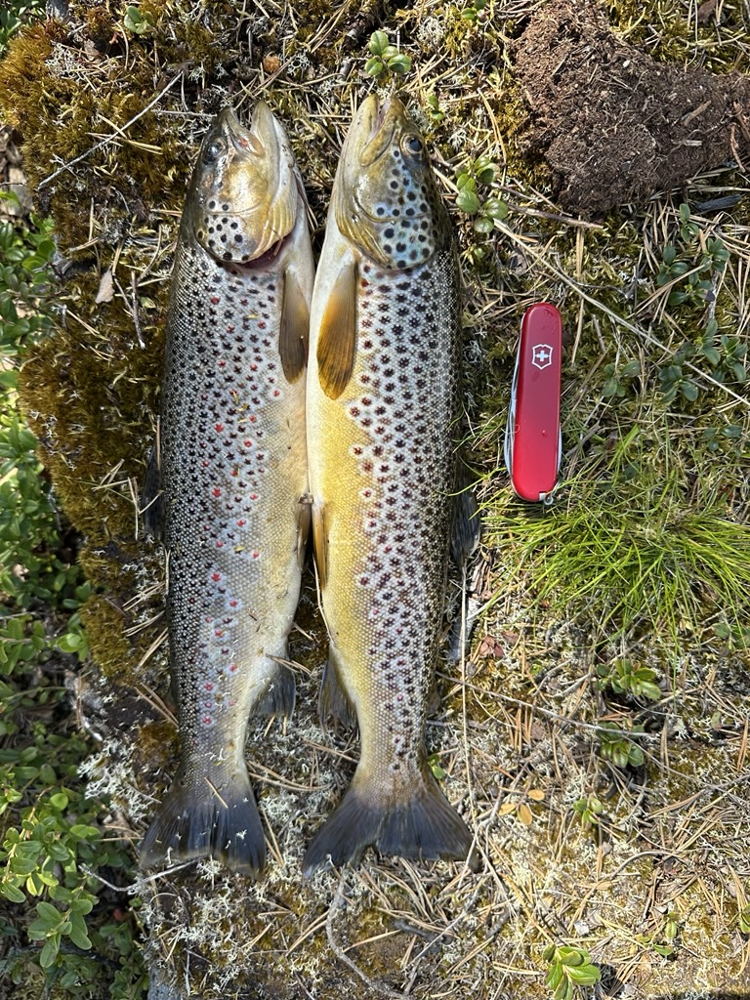
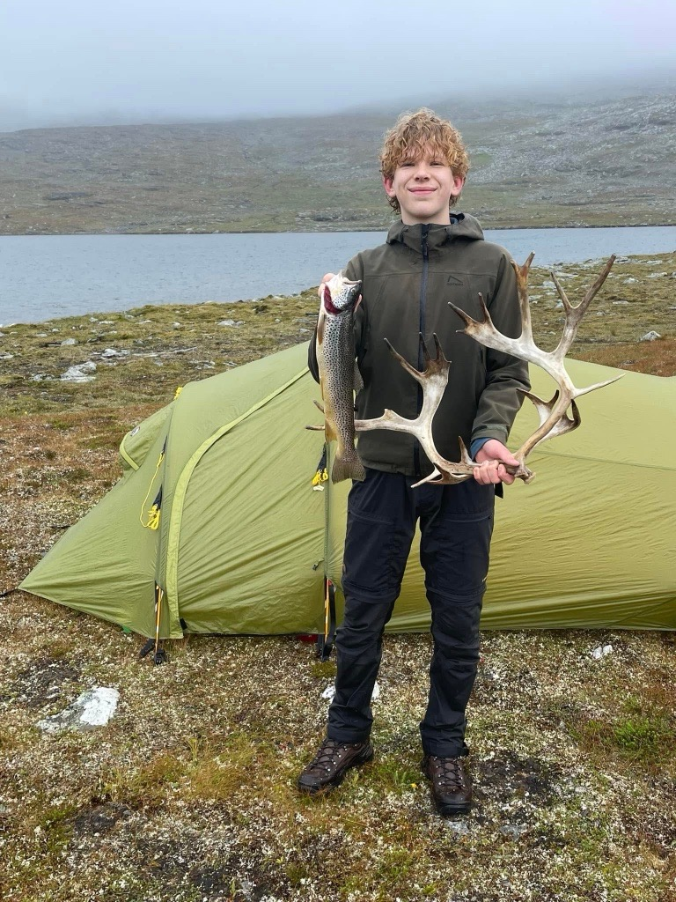
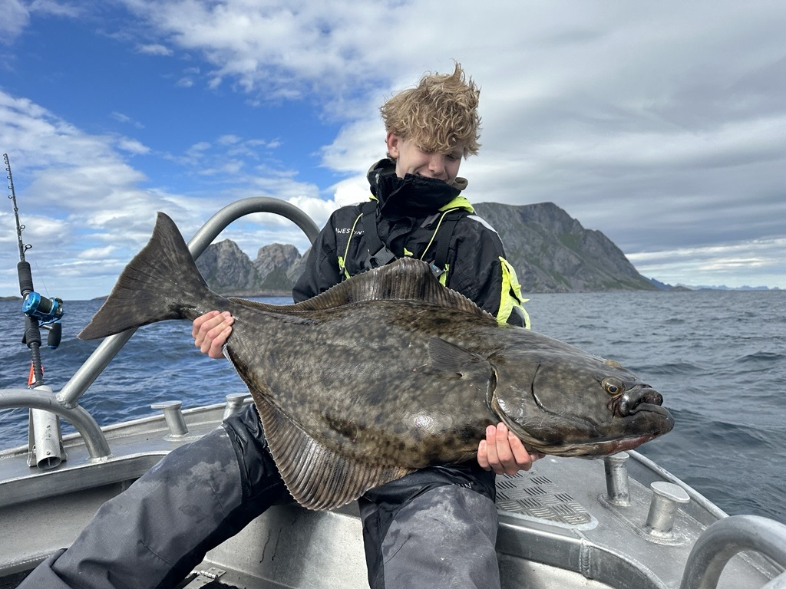

-
 hjem
hjem -
 ski
ski -
 fiske
fiske  timeplan
timeplan bildegalleri
bildegalleri
hjemskifisketimeplanbildegalleriFiske har lange tradisjoner i Norge, både langs kysten og i innlandet. Langs kysten har fiske vært en viktig del av livsgrunnlaget i hundrevis av år. Folk har levd av å fange torsk, sild, sei og andre fiskeslag, og mange lokalsamfunn er bygd opp rundt fiskeriene. Lofotfisket er for eksempel en kjent og viktig del av norsk kystkultur. I fjellet og i innsjøene har innlandsfiske også hatt stor betydning, både som matressurs og som fritidsaktivitet. I dag er fiske ikke bare næring, men også en populær hobby. Fluefiske, spesielt etter ørret og laks i elver og fjellvann, har blitt en tradisjon som kombinerer naturopplevelse, tålmodighet og ferdighet. Slik er fiske fortsatt en viktig del av norsk kultur og identitet.
 





Jeg liker veldig godt å fiske, uansett om det er i sjøen, i innsjøer eller i fjellet. Det er noe spesielt med all slags fiske – lyden av bølgene når man står på svabergene, stillheten ved et fjellvann, eller spenningen når du kjenner nappet på snøret. Likevel er fluefiske min største lidenskap. Det krever konsentrasjon, ro og en forståelse for naturen rundt seg. Når jeg står i elva og kaster flua ut, føler jeg en helt egen forbindelse til omgivelsene. Fiske handler for meg ikke bare om fangsten, men om opplevelsen – å være ute, puste frisk luft og kjenne hvor liten og fri man er i naturen. Det er det som gjør fiske så spesielt.